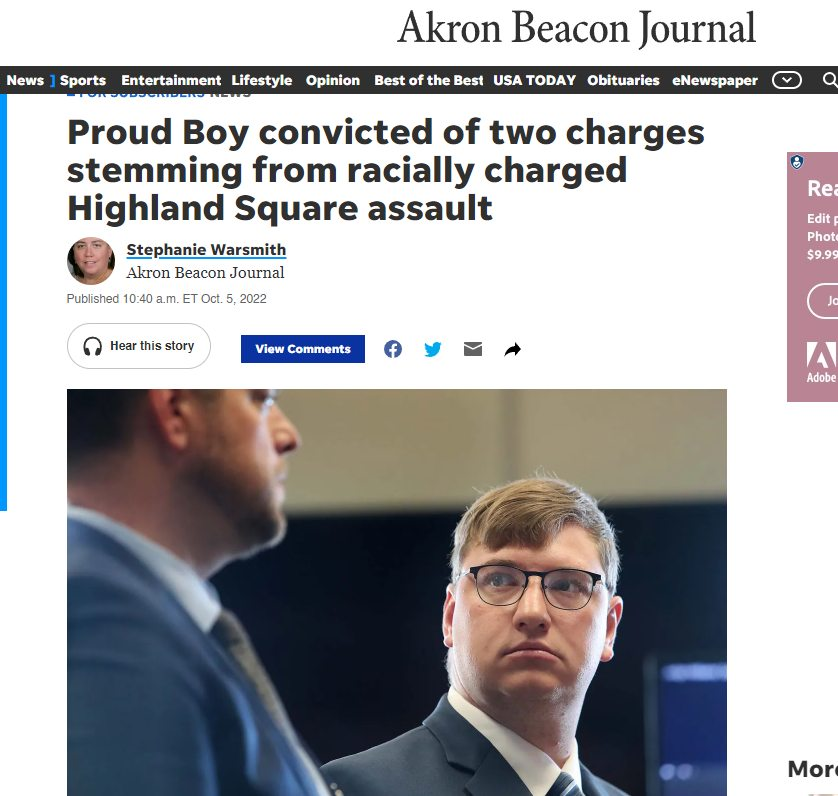

Timeline photos
This is an interesting story. Andrew Walls is a gay racist.
I love these kinds of messy stories.
Progressives want to support his gayness. But not his racism.
Conservatives want to support his right to free speech of racism (because they support his racism) but not his gayness.
What's the answer?
Be gay. Be racist. Just don't hurt other people over it. If he had just yelled racial hate in Highland Square he would have been fine. But instead, he punched a Black woman because her mere existence drove him to physical rage.
He should have been charged with a hate crime. Instead, he plead no contest to assault and a reduced charge of disorderly conduct. That's probably just as assaulting to that Black woman as being punched in the face.